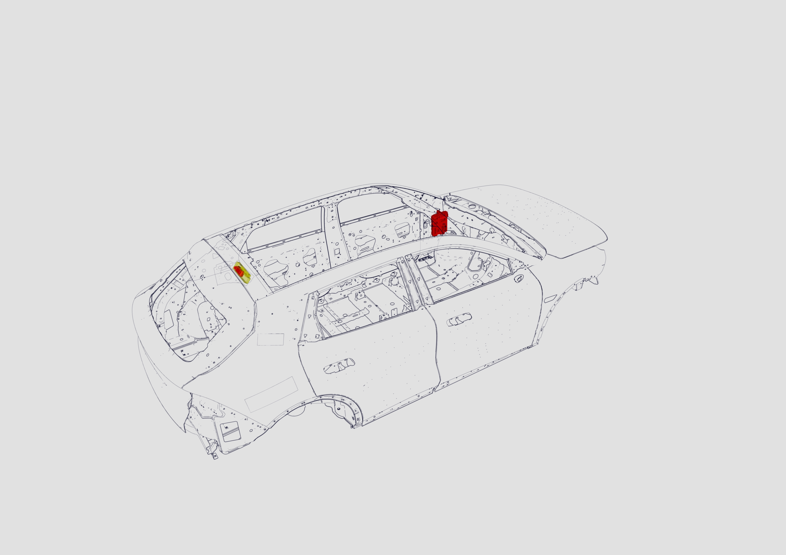

Состав: состоит из радиочастотного приемника RFBT в сборе, переднего интеллектуального контроллера кузова BDC в сборе и заднего интеллектуального контроллера кузова BDCR в сборе. (Модуль RFBT интегрирован в BDCR; автомобиль комплектуется одним из двух контроллеров в зависимости от комплектации)
Расположение:
1. Радиочастотный приемник RFBT в сборе и задний интеллектуальный контроллер кузова BDCR в сборе расположены на поперечине двери задка;
2. Передний интеллектуальный контроллер кузова BDC в сборе расположен на внутренней панели левой стойки A.
